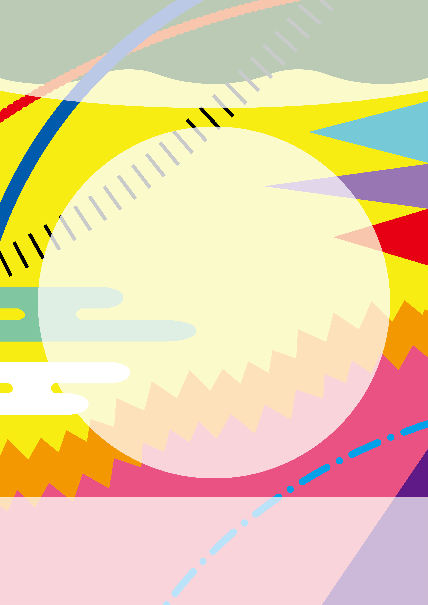

採用作品「形になる前」
山口県美容技術コンクール ポスターデザイン 採用

Overview
- 課題制作 制作全般
- 制作時期：2025年
- 使用ツール：Illustrator
Concept
このポスターでは、美容の世界が持つ「自由さ」と「多様性」を形や色、リズムといった要素のみで表現しました。 ビビッドな色の組み合わせやグラフィックは、既存の枠にとらわれない、自由でクリエイティブな感性を象徴し、"自分らしく美を楽しむ" というメッセージを込めています。 また、着物をイメージした和の要素を取り入れることで、日本の伝統美も感じられる構成にしました。 和柄風の模様や色の切り替えによって、着物の繊細さや美しさを表現しつつ、現代的なカラーと融合させることで、和と洋の新しい調和を目指しました。 さらに、情報の視認性を高めるために、中央および上下には白いスペースを設け、実用性とデザイン性の両立を意識しながら制作しました。